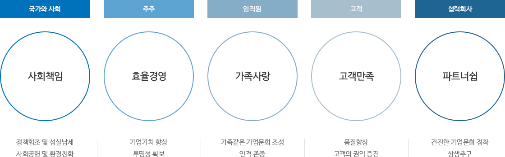
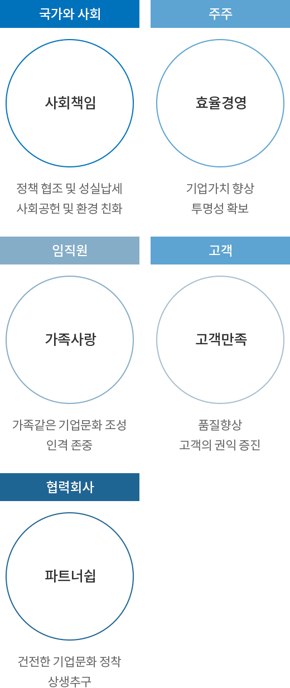

지속가능경영
GS글로벌은 지속가능한 성장을 위해 ESG 경영을 추진하고 있습니다.
개요
GS글로벌은 윤리경영을 기반으로 고객 및 협력회사에게 거래하고 싶은 회사, 주주에게는 투자하고 싶은 회사,
임직원들이게는 근무하고 싶은 회사, 국가와 사회에 대한 책임을 준수하는 회사로 만들어 나갈 것 입니다.
임직원들이게는 근무하고 싶은 회사, 국가와 사회에 대한 책임을 준수하는 회사로 만들어 나갈 것 입니다.
윤리경영


GS글로벌은 고객이 진정한 사업기반이라는 신념 하에 고객의 의견을 항상 존중하고, 고객에게 도움이 되는 가치를
끊임없이 창출하여 제공함으로써 고객으로부터 무조건의 신뢰를 확보한다.
(2) 고객에게 제공되는 제품과 서비스는 고객의 안전을 최우선적으로 고려해야한다.
(2) 고객에게 실질적으로 도움이 되고 만족을 줄 수 있는 참된 가치를 계속해서 창조한다.
(2) 고객에게 합리적인 가격으로 최고 품질의 상품과 서비스를 제공하며, 고객의 정당한 요구에는 신속, 정확하게 응답한다.
끊임없이 창출하여 제공함으로써 고객으로부터 무조건의 신뢰를 확보한다.
1. 고객의 존중
고객의 의견에 항상 귀를 기울이고, 고객의 진정한 요구는 항상 옳다고 생각하며, 고객을 모든 판단 및 행동의 최우선기준으로
삼는다.
2. 고객의 보호
(1) 고객과 관련된 정보를 타인에게 누설하거나 타 용도에 사용하지 않는다.
(2) 고객에게 제공되는 제품과 서비스는 고객의 안전을 최우선적으로 고려해야한다.
3. 가치의 창조
(1) 고객의 발전이 곧 우리의 발전이라는 인식 하에 고객이 필요로 하는 가치를 찾으려고 항상 노력한다.
(2) 고객에게 실질적으로 도움이 되고 만족을 줄 수 있는 참된 가치를 계속해서 창조한다.
4. 가치의 제공
(1) 고객에게 진실만을 말하며 고객과의 약속은 반드시 지킨다.
(2) 고객에게 합리적인 가격으로 최고 품질의 상품과 서비스를 제공하며, 고객의 정당한 요구에는 신속, 정확하게 응답한다.
GS글로벌은 전세계의 모든 사업활동에서 해당지역의 관계법규를 준수하며, 정당한 방법을 통하여 경쟁의 우위를 확보한다.
(2) 진정한 실력으로 정정당당하게 선의의 경쟁을 하며, 경쟁사의 이익을 침해하거나 약점을 부당하게 이용하지 않는다.
1. 자유경쟁의 추구
(1) 자유경쟁의 원칙에 따라 세계 어디에서나 시장경제 질서를 존중하며, 상품과 서비스의 질을 통하여 고객의 신뢰를 확보한다.
(2) 진정한 실력으로 정정당당하게 선의의 경쟁을 하며, 경쟁사의 이익을 침해하거나 약점을 부당하게 이용하지 않는다.
2. 법규의 준수
국내 및 해외에서의 모든 사업활동은 해당국가의 제반 법규를 준수하고 거래의 관습을 존중하여 수행한다.
모든 거래는 평등한 참여기회가 보장된 가운데 자유경쟁의 원칙에 따라 이루어지며, 투명하고 공정한 거래를 통해 상호신뢰와 협력관계를
구축함으로써 장기적 관점에서 공동의 발전을 추구한다.
(2) 거래선 등록 및 선정은 객관적이고 공정한 심사기준에 따라 합리적인 방법으로 수행한다.
(2) 우월적 지위를 이용한 어떠한 형태의 부당행위도 하지 않는다.
(3) 거래에 필요한 정보는 적절한 절차를 거쳐 적기에 상호 제공하며, 거래결과는 공정한 기준에 따라 정기적으로 평가하여 상호 보완한다.
(2) 깨끗한 거래풍토를 조성하고 공정한 거래질서를 유지하기 위해 거래선과 상호 노력한다.
1. 평등한 기회
(1) GS글로벌은 자격을 구비한 모든 업체에게 거래선 등록 및 선정에 참여할 수 있는 기회를 평등하게 부여한다.
(2) 거래선 등록 및 선정은 객관적이고 공정한 심사기준에 따라 합리적인 방법으로 수행한다.
2. 공정한 거래절차
(1) 모든 거래는 상호 대등한 위치에서 공정하게 이루어지며 거래조건 및 거래 절차에 대해 충분한 협의를 거친다.
(2) 우월적 지위를 이용한 어떠한 형태의 부당행위도 하지 않는다.
(3) 거래에 필요한 정보는 적절한 절차를 거쳐 적기에 상호 제공하며, 거래결과는 공정한 기준에 따라 정기적으로 평가하여 상호 보완한다.
3. 상호발전의 추구
(1) 기술지원 및 경영지도 등을 통해 장기적으로 거래선이 경쟁력을 갖추어 성장할 수 있도록 적극 지원하고,혁신을 통해 창출되는
수익을 상호 공유한다.
(2) 깨끗한 거래풍토를 조성하고 공정한 거래질서를 유지하기 위해 거래선과 상호 노력한다.
임직원은 정직과 공정의 신념으로 GS글로벌인으로서의 올바른 가치관을 확립하고, 끊임없는 자기계발과 공정한 직무수행을 통해 주어진
사명을 완수한다.
(2) 높은 윤리적 가치관을 가지고 개인의 품위와 GS의 명예를 유지할 수 있도록 항상 노력한다.
(2) 주어진 직무는 최선을 다해 정당한 방법으로 수행하며 제반 관련법규를 준수한다.
(3) 회사의 재산을 잘 유지관리하고, 업무상 취득한 회사의 비밀을 보호한다.
(4) 동료 및 관계 부서간에 적극적인 협조와 원활한 의사소통으로 업무의 효율을 높인다.
(2) 직무와 관련하여 판단의 공정성을 저해할 수 있는 어떠한 형태의 금전적 이익도 이해관계자로부터 취하지 않는다.
(3) 일상생활 및 직무와 관련하여 사회로부터 지탄 받을 수 있는 비도덕적, 비윤리적 행위를 하지 않는다.
(2) 개인의 이익을 위해 회사의 재산을 무단 사용하는 것을 금지한다.
1. 기본윤리
(1) 임직원은 GS인으로서의 긍지와 자부심을 가지며, 항상 정직하고 공정한 자세를 견지한다.
(2) 높은 윤리적 가치관을 가지고 개인의 품위와 GS의 명예를 유지할 수 있도록 항상 노력한다.
2. 사명의 완수
(1) 임직원은 회사의 비전과 방침에 따라 각자의 사명을 성실히 수행한다.
(2) 주어진 직무는 최선을 다해 정당한 방법으로 수행하며 제반 관련법규를 준수한다.
(3) 회사의 재산을 잘 유지관리하고, 업무상 취득한 회사의 비밀을 보호한다.
(4) 동료 및 관계 부서간에 적극적인 협조와 원활한 의사소통으로 업무의 효율을 높인다.
3. 자기개발
(1) 바람직한 인재상을 스스로 정립하고, 끊임없는 자기개발을 통해 인재상에 부합 되도록 꾸준히 노력한다.
4. 공정한 직무수행
(1) 모든 직무를 정직하고 공정하게 수행하며, 건전한 기업문화를 조성하기 위해 항상 노력한다.
(2) 직무와 관련하여 판단의 공정성을 저해할 수 있는 어떠한 형태의 금전적 이익도 이해관계자로부터 취하지 않는다.
(3) 일상생활 및 직무와 관련하여 사회로부터 지탄 받을 수 있는 비도덕적, 비윤리적 행위를 하지 않는다.
5. 회사와의 이해상충 회피
(1) 회사와 개인의 이해가 상충되는 어떠한 행위나 관계도 회피한다.
(2) 개인의 이익을 위해 회사의 재산을 무단 사용하는 것을 금지한다.
GS글로벌은 모든 임직원을 한 인간으로서 존중하고 능력과 업적에 따라 공정하게 대우하며, 임직원의 창의성이 충분히 발휘 되도록
노력한다.
(2) 임직원이 주인의식을 바탕으로 일을 통해 긍지와 보람을 성취할 수 있도록 최선을 다한다.
(3) 임직원이 정당한 방법으로 사명을 수행할 수 있도록 제도의 확립과 교육•지도 등 필요한 조치를 강구한다.
(2) 임직원의 능력과 업적에 대하여 공정한 기준에 따라 평가하고, 정당하게 보상한다.
(2) 임직원의 능력개발을 위해 적극적으로 지원하고 장기적 관점에서 인재를 육성한다.
(3) 개인의 사생활을 존중하고, 상호신뢰와 이해를 바탕으로 성숙한 조직문화를 이룩한다.'
1. 인간존중
(1) GS글로벌은 사람에 대한 상호 대등한 믿음과 진정한 애정을 갖고 임직원 한 사람 한 사람을 독립된 인격으로 대한다.
(2) 임직원이 주인의식을 바탕으로 일을 통해 긍지와 보람을 성취할 수 있도록 최선을 다한다.
(3) 임직원이 정당한 방법으로 사명을 수행할 수 있도록 제도의 확립과 교육•지도 등 필요한 조치를 강구한다.
2. 공정한 대우
(1) 임직원의 능력과 자질에 따라 평등한 기회를 부여한다.
(2) 임직원의 능력과 업적에 대하여 공정한 기준에 따라 평가하고, 정당하게 보상한다.
3. 창의성의 촉진
(1) 임직원의 독창적 사고와 자율적 행동이 촉진될 수 있는 여건을 최대한 조성한다.
(2) 임직원의 능력개발을 위해 적극적으로 지원하고 장기적 관점에서 인재를 육성한다.
(3) 개인의 사생활을 존중하고, 상호신뢰와 이해를 바탕으로 성숙한 조직문화를 이룩한다.'
GS글로벌은 합리적인 사업전개를 통해 건실한 기업으로 성장함으로써 주주의 이익을 보호하고, 국민의 풍요로운 삶과 사회발전에
공헌한다.
(2) 회사의 안정적 성장의 바탕 위에서 사업의 확대를 도모한다.
1. 합리적 사업전개
(1) 국내외를 막론하고 해당지역의 사회적 가치관을 존중하여 사업을 수행한다.
(2) 회사의 안정적 성장의 바탕 위에서 사업의 확대를 도모한다.
2. 주주 이익의 보호
효율적인 경영을 통하여 건전한 이익을 실현함으로써 주주의 투자수익을 성실하게 보호한다.
3. 사회발전에 기여
고용의 창출과 조세의 성실한 납부로 국가발전에 기여하고 문화 및 복지사업을 통해 사회발전에 공헌한다.
4. 환경의 보호
깨끗한 환경의 보전을 위해 환경오염의 방지 및 자연보호에 최선의 노력을 경주한다.
1. 구성원들이 윤리규정을 올바르게 해석하고 실행할 수 있도록 별도의 ‘윤리규정 실천세칙’을 제정하여 시행한다.
1.1 목적
본 윤리규정 실천세칙(이하 '실천세칙'이라 한다)은 주식회사 GS글로벌(이하 'GS글로벌'이라 한다)의 구성원이 윤리규정을
올바르게 이해하고 실천할 수 있도록 의사결정과 행동의 판단기준을 제공하는데 그 목적이 있다.
1.2 의사결정 및 행동원칙
1) 구성원은 직무수행과 관련하여 윤리적 갈등상황에 놓이게 되는 경우 윤리규정과 본 실천세칙을 기준으로 판단하고 행동하여야 한다.
2) 본 실천세칙은 구성원의 건전한 의식과 상식을 존중하여 최소한의 기준만을 제시한 것으로 실천세칙에 판단기준이 명확하게 규정되어 있지 않고 자신의 판단에 확신이 없는 경우에는 조직의 리더 또는 직속부서장의 자문에 따라 행동하여야 한다
1.3. 적용대상
본 실천세칙은 GS글로벌과 경영권이 있는 국내•외 투자회사의 구성원에게 적용된다. 회사의 이해관계자에게도 본 윤리규정을 이해시키고
실천을 권장한다.
2.1 성실한 업무수행
1) 구성원은 전사 경영이념을 공유하고 회사가 추구하는 목표와 가치를 공감하여 각자에게 부여된 직무를 최선을 다해 정당한 방법으로
수행하고 업무와 관련된 제반 법규와 회사의 규정을 준수한다.
2) 구성원은 각자의 언행이 회사의 신뢰와 명성에 직결된다는 것을 명심하고 사회 구성원으로서의 책임과 의무를 다하도록 노력해야 한다.
2.2 이해상충 문제의 해결
1) 구성원은 직무수행과 관련하여 회사와 이해가 상충되는 어떠한 행위나 관계가 발생하지 않도록 노력하며 이해가 상충될 경우는
회사의 이익을 우선적으로 생각하고 이를 위반하는 것을 발견할 경우 조직의 리더나 직무부서장에게
보고 또는 제보하여야 한다.
2) 구성원이 업무영향력을 행사할 수 있거나 업무수행에 있어 구성원의 판단이나 행동에 영향을 줄 수 있는 이해상충 행위는 다음과 같다.
- 본인이 직접 또는 제 3자를 통하여 회사와 계약 또는 거래하는 행위
- 본인이 직접 또는 제 3자를 통하여 경쟁업체 또는 협력회사와 거래하는 행위
- 회사의 승인 없이 이해관계가 있는 회사의 직위를 겸임하는 행위
- 협력회사와 금전대차, 공동투자, 대출보증, 부동산 또는 동산의 임대차 등의 거래관계를 맺는 행위
- 협력회사로부터 보상을 받거나 협력회사의 주식, 채권 등을 취득하는 행위
- 가족 또는 친인척이 회사 및 협력회사와 거래하는 행위
- 회사의 자산이나 경영정보를 이용하여 부당하게 사적 이익을 취하는 행위
- 업무상 지위를 남용하여 협력회사에 대한 인사청탁, 각종 편의제공 요구 등 부당한 영향력을 행사하는 행위
3) 위 제2)호는 이해상충 행위의 예시로서 위에 예시한 행위 이외의 경우에도 구성원은 본인의 행위가 이해상충 행위에 해당하는지 여부를 엄격하게 판단하여 본 실천세칙을 적용하고 준수하여야 한다.
2.3. 회사 재산 및 정보의 보호
1) 구성원은 회사의 유, 무형 자산을 보호하고 정당하게 사용하여야 한다.
2) 재산 보호
- 회사의 승인 없이 회사자산을 본인 또는 제 3자의 이익을 위하여 이용하거나 제 3자에게 제공하지 않는다.
- 회사의 자산을 본인 또는 제 3자에게 저가로 양도, 대여하거나 회사의 재산으로 본인 또는 제 3자의 자산을 고가로 구입, 차용하지 않는다.
- 회사에 중대한 손실을 가져올 상황이 발생하거나 가능성이 있을 경우 즉시 회사에 보고하고 손실을 최소화 할 수 있는 조치를 취한다.
- 회사의 예산을 개인적인 용도로 사용하지 않으며 회사가 정한 목적과 기준에 적합하게 사용한다.
3) 정보보호
- 구성원은 업무상 취득한 회사의 미공개 정보를 이용하거나, 제 3자에게 제공하여 사적 이익을 도모하는 행위를 해서는 아니 된다.
- 구성원은 회사 정보와 영업비밀을 사전 승인 없이 내•외부에 누설하거나 제공해서는 아니 되며, 회사의 정보보안 정책에 의거 회사 외부로 발송되는 전자문서의 보관 및 점검 등에 적극 협조하여야 한다.
2.4. 선물, 접대 등의 수수
1) 구성원은 공과 사를 엄격히 구분하고 공정하고 투명하게 업무를 수행하여야 한다.
2) 구성원은 협력회사 등 이해관계자들로부터 금품, 향응 또는 기타 개인적인 편의 등을 제공받아서는 아니 된다.
단, 상호간의 건전한 관계를 유지하기 위해 이해관계자와 사회 통념상 인정되는 범위 내에서 합리적인 수준의 선물이나 접대 등을 주고 받을 수 있으며, 이에 대한 세부세칙은 담당부서와 협의 하에 조직 단위로 제정하여 운용할 수 있다.
2.5. 구성원간의 상호 존중
1) 구성원은 동료 및 상하간에 서로 존중하고 직장생활에 필요한 기본 예의와 품의를 지켜 행복 저해요소를 제거하고 건전한
조직분위기를 조성하여야 한다.
2) 구성원 상호간에 性, 학력, 출신지역, 결혼, 인종, 국적, 종교 등을 이유로 차별대우를 하지 않아야 한다.
3) 구성원은 개인의 인권을 침해하고 근무 분위기를 저해할 수 있는 일체의 성희롱 행위, 사적인 부담을 주는 행위를 하여서는 아니 된다.
3.1 고객만족 추구와 고객정보의 보호
1) 품질, 신뢰성 및 안전성에 대한 고객의 기대와 요구수준을 파악하기 위한 모든 노력을 다하며 이를 충족하는 제품과 서비스를
공급한다.
2) 고객에게 합리적인 선택을 할 수 있도록 제품의 성능과 위험을 정확하게 알려야 하며 허위 또는 과장 광고를 하지 않아야 한다.
3) 회사는 고객정보 보호관련 법령을 준수하고 고객의 개인정보를 취급하는 구성원은 관련 법규 및 회사의 방침과 사규에 따라 안전하게 개인정보를 보호하여야 하며 고객의 동의가 있거나 법률상 허용되는 경우를 제외하고는 고객정보를 제공받은 목적 외의 용도로 이용하거나 제3자에게 제공하지 않는다.
3.2 경영정보의 작성과 공개
1) 회계정보는 일반적으로 인정되는 회계원칙 및 관련 법규, 사규에 따라 정확하게 기록하고 유지하여야 하며 왜곡하거나 숨겨서는 안
된다.
2) 외부 이해관계자에 대한 경영정보의 공개는 관련 법규 및 사규에 따라 투명하고 공정하게 이루어져야 한다.
3.3 공정한 거래와 경쟁
1) 공정거래 관련 제반 법규를 명확히 이해하고 준수하여야 한다.
2) 공정거래 관련 법규 위반으로 해석될 가능성이 있는 사항에 대해서는 공정거래 또는 법무 담당부서와 사전에 충분한 협의를 거쳐 처리하여야 한다.
3.4 안전, 보건, 환경에 대한 책임
1) 안전, 보건, 환경과 관련한 국내외 법규 및 국제협약을 준수하고, 지속적 개선을 추구하여야 한다.
2) 안전수칙을 준수하여 안전한 작업환경을 조성하여야 한다.
3) 환경문제의 중요성을 인식하고, 환경보호 활동에 적극 참여하여야 한다.
4.1 책임
1) 모든 구성원들은 윤리규정과 실천세칙을 준수할 책임이 있으며, 의문이 있는 사항에 대해서는 조직의 리더 또는 직속부서장에
질의, 상담하여 그 해석에 따라 행동하여야 한다.
2) 조직의 리더는 소속 구성원과 업무상 관련된 이해관계자들이 회사의 윤리규정과 실천세칙을 올바르게 이해하고 준수할 수 있도록 적극적으로 지원하고 관리할 책임이 있다. 또한 성실하고 책임 있는 의사결정과 행동을 통하여 윤리규정과 실천세칙을 준수함으로써 타의 모범을 보여야 한다.
4.2 위반행위의 보고 및 제보자 보호
1) 윤리규정과 실천세칙의 위반사항을 알게 된 구성원은 이를 조직의 리더나 직속부서장에 보고 또는 제보하여 조속히 해결 할 수
있도록 함으로써, 해당 행위로부터 회사와 구성원을 적극적으로 보호하여야 한다.
2) 제보자의 신분 및 제보내용을 보호해야 하며 정당한 제보행위에 대해 어떠한 불이익도 주지 않는다.
3) 상담 및 제보채널은 다음과 같다.
- 담당: 경영진단팀
- 전화: 02-2005-5121
- 팩스: 02-2005-5270
- 우편: (135-985) 서울시 강남구 역삼동 GS타워 10층
- E-mail : ethics@gsgcorp.com
4.3 제보자 포상 및 위반자 징계 처리
1) 제보자의 보고로 인하여 위반행위를 식별하여 당사의 위험이 관리된 경우, 제보자에 대하여 사장이 당사의 인사규정에 따라
포상등급, 시기 등을 정하여 포상할 수 있다.
2) 윤리규정 및 실천세칙을 위반한 자에 대하여 당사의 인사위원회는 그 위반의 영향을 파악하여 징계처분을 할 수 있다.
4.4 준수 및 서약의무
1) GS글로벌 구성원은 본 실천세칙을 준수하고, 서약서를 작성할 의무가 있다.
2) 본 실천세칙을 위반한 경우에는 회사의 사규에 따라 조치한다.